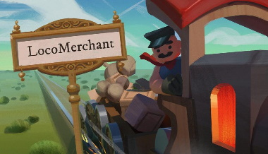

Games

Locomerchant
Locomerchant is a train driving and trading game made for the global game jam 2022; that means the entire game was made within 48 hours. The game is free to play on my website or on itch.io.Game art was made by Samma van Klaarbergen and Natalia Patkiewicz, and music and audio was created by Harm-Jan Wiechers.